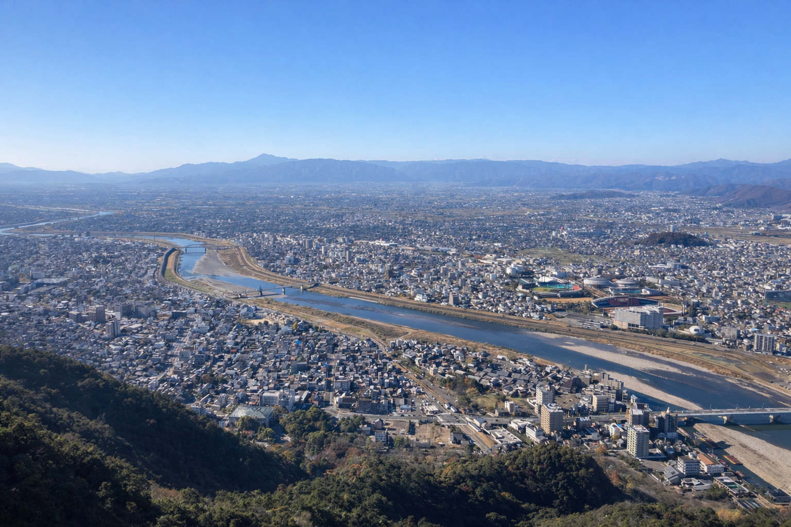

調査
砂防基礎調査、施設点検・健全度評価に対応します。
河川・砂防分野の調査・計画・設計・管理支援に対応。
技術士（総監・建設）／主担当実績 約160件。
ミノノテ（minonote）は、岐阜県岐阜市を拠点とする河川・砂防分野の土木設計事務所です。
部分的な図面・数量作成から、業務全体のとりまとめまで、業務の状況に応じた形で対応します。

砂防基礎調査、施設点検・健全度評価に対応します。
施設計画・事業計画の立案、配置計画の検討を行います。
砂防施設・関連施設の予備／詳細設計、補修改築に対応します。
災害復旧に伴う設計（国補・県単）に対応します。
工程・予算管理、技術資料整備、技術指導を支援します。